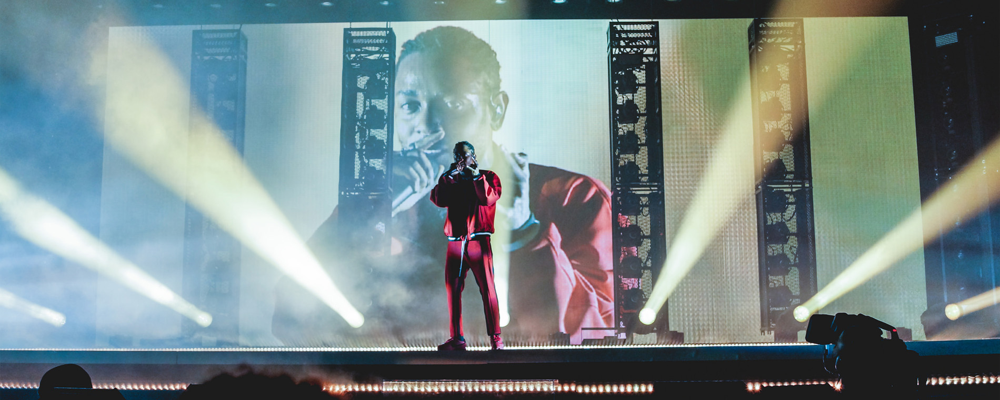

SKILLED RAP CRAFTSMAN OF THIS MILLENNIUM
"Kendrick Lamar: The DAMN. Tour @ TD Garden (Boston, MA)" by Kenny Sun on flickr.com, used under CC BY 2.0 / Cropped from original
Compton's own Kendrick Lamar is a rapper and songwriter as well as popular music's most innovative artist. He is topping charts without sacrificing quality with his well-crafted, intentional albums that tell stories and talk of issues. Even his pure rapping skill is incredible, and his creativity flows into his work with his variations with his rap flows and voices. He puts so much energy and passion into his performances, and you can see him work the intensity with his gestures and facials. Kendrick is a rap genius definitely worth checking out.
Select a sample.
Poetic Justice
i
Untitled 8 - Verse from Untitled 2 (Live)
HUMBLE.